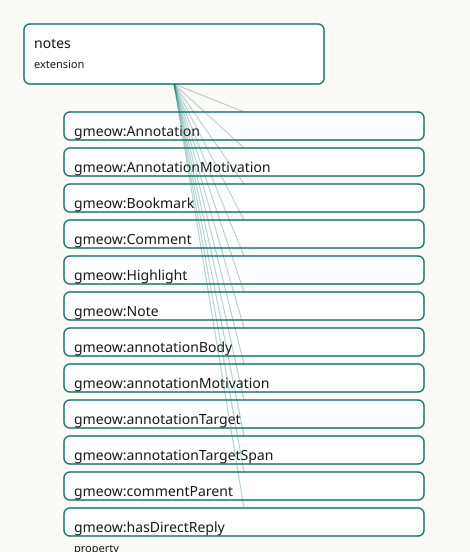

GMEOW Notes & Annotation Module
- IRI: https://blackcatinformatics.ca/gmeow/slices/notes
- Tier: extension
Group: extensions
What This Slice Covers
This slice owns 31 terms and contributes 39 mapping or projection rows. Use it when its terms match the native fact you want to preserve; use the linkage tables to see how those facts leave GMEOW for consumer vocabularies.
Dependencies
Consumers
- PKM annotations over core evidence spans; Web
Annotationprojection.
Local Map

Terms
Classes
| Term | Label | Definition |
|---|---|---|
gmeow:Annotation |
Annotation | A reified binding of a body to a target with a motivation — the W3C Web Annotation idiom expressed as a gufo:Relator. Mediates annotationBody (the note or lite... |
gmeow:AnnotationMotivation |
Annotation Motivation | The purpose for which an annotation is created — a VALUE vocabulary (individuals, never subclasses) aligned to the W3C Web Annotation motivation set. Co-equal:... |
gmeow:Bookmark |
Bookmark | An annotation that records a target resource for later retrieval, motivated by bookmarking. Typically has no body and no selector (the target entity itself is... |
gmeow:Comment |
Comment | A note that replies to an annotation or another comment — a threaded discussion node. Every Comment has exactly one commentParent (the annotation or comment be... |
gmeow:Highlight |
Highlight | An annotation that marks an anchored span within a target and carries no body — a pure target+selector binding motivated by highlighting. |
gmeow:Note |
Note | A piece of content in a personal or collective knowledge graph — an annotation body, a Zettelkasten card, a comment, or a standalone thought. Grounded as an in... |
Properties
| Term | Label | Definition |
|---|---|---|
gmeow:annotationBody |
annotation body | The note that serves as the body of an annotation — the content being attached. Functional per relator: one body per Annotation. Optional: a highlight or bookm... |
gmeow:annotationMotivation |
annotation motivation | The motivation of an annotation — the purpose for which the body is attached to the target. Functional per relator: one motivation per Annotation. An open valu... |
gmeow:annotationTarget |
annotation target | The entity that is annotated — the target of the annotation. Functional per relator: one target per Annotation. |
gmeow:annotationTargetSpan |
annotation target span | An optional anchored span within the annotation target — a text quote, position, or fragment selector. Non-functional: an annotation may reference multiple spa... |
gmeow:commentParent |
comment parent | The annotation or comment that this comment replies to. Every Comment has exactly one commentParent. The range is gmeow:Entity (encompassing Annotation and Com... |
gmeow:hasDirectReply |
has direct reply | Relates an annotation or comment to its immediate reply comment. Non-transitive inverse of commentParent. HasReply is the transitive superproperty that reaches... |
gmeow:hasReply |
has reply | Relates an annotation or comment to a reply comment. Transitive: the full reply tree is reachable. Superproperty of hasDirectReply. Intentionally kept free of... |
gmeow:hasWikilink |
has wikilink | A directed wikilink edge projected from mentions or relatedNote for Markdown / PKM round-trip. Not asserted in the canonical graph; materialized by the markdow... |
gmeow:mentionedIn |
mentioned in | The inverse of mentions: an entity is mentioned in a note — the backlink view. Materialized by projection or inference, never hand-maintained. |
gmeow:mentions |
mentions | A note mentions another entity (typically another note or a resource) — the source of a directed backlink edge. Non-functional: a note may mention many entitie... |
gmeow:noteAuthor |
note author | The agent who authored a note — the flat 80% shortcut. Non-functional: a note may have multiple co-authors. Promote to a reified gmeow:Participation or prov:wa... |
gmeow:noteContent |
note content | The textual or markdown content of a note. The flat 80% case; promote to a structured CreativeWork or a reified annotation when provenance, versioning, or mult... |
gmeow:noteCreatedAt |
note created at | The creation timestamp of a note — a lightweight four-clock shortcut. The heavy case uses a reified gmeow:Participation or prov:wasAttributedTo with full tempo... |
gmeow:noteModifiedAt |
note modified at | The last-modification timestamp of a note — a lightweight four-clock shortcut. |
gmeow:relatedNote |
related note | An undirected associative link between two notes — the semantic sibling of relatedTag, applied to the note graph. Symmetric. Optional: the note graph stays fla... |
Individuals
| Term | Label | Definition |
|---|---|---|
gmeow:motivationAssessing |
assessing | The annotation assesses or evaluates the target. |
gmeow:motivationBookmarking |
bookmarking | The annotation bookmarks the target for later retrieval. |
gmeow:motivationCommenting |
commenting | The annotation comments on the target. |
gmeow:motivationDescribing |
describing | The annotation describes the target. |
gmeow:motivationHighlighting |
highlighting | The annotation highlights a span within the target. |
gmeow:motivationLinking |
linking | The annotation links the target to another resource. |
gmeow:motivationModerating |
moderating | The annotation moderates or curates the target. |
gmeow:motivationQuestioning |
questioning | The annotation poses a question about the target. |
gmeow:motivationReplying |
replying | The annotation replies to another annotation or comment. |
gmeow:motivationTagging |
tagging | The annotation tags the target with a label or topic. |
Linkages
- Rows: 39
- Projection profiles:
activitystreams,markdown,schema-org,web-annotation - External vocabularies:
as,dcterms,foaf,oa,rdf,schema,sioc
| Source | Kind | Profile | Predicate/Relation | Target | Evidence |
|---|---|---|---|---|---|
gmeow:Annotation |
equivalence | - |
skos:closeMatch | oa:Annotation | gmeow-notes.sssom.tsv; gmeow:eqNotes001; confidence 0.85 |
gmeow:Comment |
equivalence | - |
skos:closeMatch | schema:Comment | gmeow-notes.sssom.tsv; gmeow:eqNotes007; confidence 0.85 |
gmeow:Comment |
equivalence | - |
skos:closeMatch | sioc:Post | gmeow-notes.sssom.tsv; gmeow:eqNotes010; confidence 0.8 |
gmeow:Note |
equivalence | - |
skos:closeMatch | as:Note | gmeow-notes.sssom.tsv; gmeow:eqNotes009; confidence 0.8 |
gmeow:Note |
equivalence | - |
skos:closeMatch | schema:NoteDigitalDocument | gmeow-notes.sssom.tsv; gmeow:eqNotes006; confidence 0.85 |
gmeow:annotationBody |
equivalence | - |
skos:closeMatch | oa:hasBody | gmeow-notes.sssom.tsv; gmeow:eqNotes002; confidence 0.9 |
gmeow:annotationMotivation |
equivalence | - |
skos:closeMatch | oa:motivatedBy | gmeow-notes.sssom.tsv; gmeow:eqNotes004; confidence 0.95 |
gmeow:annotationTarget |
equivalence | - |
skos:closeMatch | oa:hasTarget | gmeow-notes.sssom.tsv; gmeow:eqNotes003; confidence 0.95 |
gmeow:commentParent |
equivalence | - |
skos:closeMatch | schema:parentItem | gmeow-notes.sssom.tsv; gmeow:eqNotes008b; confidence 0.8 |
gmeow:commentParent |
equivalence | - |
skos:closeMatch | sioc:reply_of | gmeow-notes.sssom.tsv; gmeow:eqNotes011; confidence 0.85 |
gmeow:hasReply |
equivalence | - |
skos:closeMatch | sioc:has_reply | gmeow-notes.sssom.tsv; gmeow:eqNotes012; confidence 0.85 |
gmeow:mentions |
equivalence | - |
skos:closeMatch | schema:mentions | gmeow-notes.sssom.tsv; gmeow:eqNotes008; confidence 0.9 |
gmeow:noteAuthor |
equivalence | - |
skos:closeMatch | dcterms:creator | gmeow-notes.sssom.tsv; gmeow:eqNotes005; confidence 0.8 |
gmeow:noteAuthor |
equivalence | - |
skos:closeMatch | foaf:maker | gmeow-notes.sssom.tsv; gmeow:eqNotes013; confidence 0.75 |
gmeow:noteContent |
equivalence | - |
skos:closeMatch | as:content | gmeow-notes.sssom.tsv; gmeow:eqNotes009a; confidence 0.85 |
gmeow:noteContent |
equivalence | - |
skos:closeMatch | schema:text | gmeow-notes.sssom.tsv; gmeow:eqNotes008a; confidence 0.85 |
gmeow:Annotation |
projection | web-annotation |
projects to / <= | oa:Annotation, oa:hasBody, oa:hasTarget, oa:motivatedBy, rdf:type | gmeow:mapOaAnnotation; confidence 0.85; lossy: provenance, confidence, temporal scope, standpoint, suppression dropped; body may be absent (highlights/bookmarks) |
gmeow:Bookmark |
projection | web-annotation |
projects to / <= | oa:Annotation, oa:bookmarking, oa:hasTarget, oa:motivatedBy, rdf:type | gmeow:mapOaBookmark; confidence 0.85; lossy: body and selector absent by design; provenance/confidence/standpoint dropped |
gmeow:Comment |
projection | web-annotation |
projects to / <= | oa:Annotation, oa:hasBody, oa:hasTarget, oa:motivatedBy, oa:replying, rdf:type | gmeow:mapOaComment; confidence 0.8; lossy: thread depth, reply tree, standpoint, confidence, temporal scope dropped; only direct parent-target survives |
gmeow:Highlight |
projection | web-annotation |
projects to / <= | oa:Annotation, oa:SpecificResource, oa:hasSelector, oa:hasSource, oa:hasTarget, oa:highlighting, oa:motivatedBy, rdf:type | gmeow:mapOaHighlight; confidence 0.85; lossy: body absent by design; selector precision (prefix/suffix) dropped if not projected; provenance/confidence/standpoint dropped |
gmeow:Note |
projection | activitystreams |
projects to / <= | as:Note, as:attributedTo, as:content, rdf:type | gmeow:mapAsNote; confidence 0.8; lossy: standpoint, confidence, temporal scope, suppression state, aboutness, tagging, backlinks dropped |
gmeow:Note |
projection | markdown |
projects to / <= | gmeow:hasWikilink |
gmeow:mapMarkdownMentions; confidence 0.9; lossy: mentions → directed wikilink edge only |
gmeow:Note |
projection | markdown |
projects to / <= | gmeow:hasWikilink |
gmeow:mapMarkdownRelatedNote; confidence 0.9; lossy: relatedNote → bidirectional wikilink edges materialized; standpoint, confidence, temporal scope, suppression, aboutness, tagging dropped |
gmeow:Note |
projection | schema-org |
projects to / <= | rdf:type, schema:NoteDigitalDocument, schema:author, schema:parentItem, schema:text | gmeow:mapSchemaNote; confidence 0.85; lossy: standpoint, confidence, temporal scope, suppression state, aboutness, tagging dropped; Comment-specific typing collapsed to schema:NoteDigitalDocument (rdflib UNION limit) |
| ... | ... | ... | ... | ... | 15 more rows |
Guide
Notes & Annotation — alignment & projection reference
The first-class annotation and personal-knowledge-management layer. A person's digital
existence includes their notes — annotations, highlights, bookmarks, comments, and the
linked web of thought (Zettelkasten / PKM). This slice unifies scattered GMEOW pieces
(documents, sources, EvidenceSpan, aboutness, standpoint) into a coherent annotation layer
that reuses, never duplicates existing constructs.
Everything here is authored once in mapping-dsl/ and generated by
gmeow compile-mappings (Principle 4); nothing in mappings/, projections/, or
queries/projections/ is hand-edited.
Core design
- A
Noteis content; anAnnotationbinds it to a target (the W3C WebAnnotationidiom: Body / Target / Motivation). A highlight = target + selector, no body; a bookmark =motivatedBy bookmarking; a comment = aNotereplying to a target. - One selector model, reused. The annotation target's selector is the
EvidenceSpan/Selector(text quote, text position, page, locator).Selectoris a subclass ofEvidenceSpan; no second selector model is minted. - Aboutness is a
Tagging, not a string. A note's topic reusesisAbout/Taggingfrom the tags building block. - Backlinks are first-class and bidirectional (the RDF gap):
mentions/mentionedIn(inverse),relatedNote(symmetric) — kept out of OWL cardinality for DL regularity. - Perspectival + suppressible: notes are
accordingTo-indexed; a retracted note setsdisplayable false, never deleted (Principle 10).
Terms
| Term | Kind | Role |
|---|---|---|
gmeow:Note |
class (gufo:Kind ⊑ InformationObject) |
The content layer — a note, card, or thought |
gmeow:Annotation |
class (gufo:Kind ⊑ Relator) |
Reified binding of body → target with motivation |
gmeow:Highlight |
class (gufo:SubKind ⊑ Annotation) |
Target + selector, no body |
gmeow:Bookmark |
class (gufo:SubKind ⊑ Annotation) |
Target only, motivated by bookmarking |
gmeow:Comment |
class (gufo:SubKind ⊑ Note) |
A reply note; threaded via commentParent / hasReply |
gmeow:EvidenceSpan |
class (gufo:Kind ⊑ InformationObject) |
Generalized anchored target span |
gmeow:Selector |
class (gufo:Kind ⊑ EvidenceSpan) |
Citation-specific pinpoint (page, quote, position, locator) |
gmeow:mentions |
object property | A note mentions another entity (directed backlink source) |
gmeow:mentionedIn |
object property (inverseOf mentions) |
The backlink view |
gmeow:relatedNote |
object property (SymmetricProperty) |
Undirected associative link between notes |
gmeow:AnnotationMotivation |
value vocabulary (individuals) | describing, commenting, highlighting, bookmarking, tagging, linking, questioning, replying, assessing, moderating |
SSSOM alignments (mapping-dsl/equivalences/notes.ttl)
All by reference (Principle 5) — GMEOW never imports an external axiom. Compiled to
mappings/gmeow-notes.sssom.tsv.
Projections — the four-artifact stack
W3C Web Annotation → queries/projections/web-annotation.rq
Re-expresses GMEOW Annotation / Highlight / Bookmark / Comment as oa:Annotation.
Standpoint, provenance, confidence, temporal scope, and suppression state are
dropped; the projection is intentionally flat (no dcterms:creator emitted).
| Branch | CONSTRUCT | Lossy drop |
|---|---|---|
| Annotation | oa:hasBody, oa:hasTarget, oa:motivatedBy |
provenance, confidence, temporal scope, standpoint |
| Highlight | oa:hasTarget → oa:SpecificResource + oa:hasSelector |
body absent by design; selector precision dropped if not projected |
| Bookmark | oa:hasTarget, oa:motivatedBy oa:bookmarking |
body and selector absent by design |
| Comment | oa:hasBody, oa:hasTarget (parent), oa:motivatedBy oa:replying |
thread depth, reply tree, standpoint, confidence, temporal scope |
schema.org → queries/projections/schema-org.rq
Re-expresses Note → schema:NoteDigitalDocument (Comments included by subsumption).
| Source | Target | Lossy drop |
|---|---|---|
gmeow:Note |
schema:NoteDigitalDocument |
standpoint, confidence, temporal scope, suppression, aboutness, tagging |
gmeow:Comment |
schema:NoteDigitalDocument (+ schema:parentItem when commentParent present) |
same + reply tree depth + Comment-specific type (collapsed to avoid rdflib UNION-depth limit) |
ActivityStreams → queries/projections/activitystreams.rq
Re-expresses Note → as:Note for fediverse / decentralized syndication.
| Source | Target | Lossy drop |
|---|---|---|
gmeow:Note |
as:Note |
standpoint, confidence, temporal scope, suppression, aboutness, tagging, backlinks |
Markdown / [[wikilink]] → queries/projections/markdown.rq
The GMEOW-native bridge to Obsidian / Logseq PKM interop. Projects mentions and
relatedNote to a flat gmeow:hasWikilink graph.
⚠️ Brutally lossy. This projection drops ALL metadata: standpoint, confidence, temporal scope, suppression state, aboutness, tagging. Only the directed (
mentions) and undirected (relatedNote) wikilink edges survive. The round-trip from RDF → Markdown → RDF cannot recover the rich annotation layer; it is a deliberate downcast for human PKM consumption (Principle 4).
PKM round-trip guide
Obsidian / Logseq conventions. A note file is a Markdown document. Wikilinks are
[[Note Title]] or [[Note Title|Display Text]]. GMEOW projects a note's
rdfs:label or noteContent first line as the file title, and its mentions /
relatedNote edges as wikilinks in the markdown body. On re-ingest, the markdown
parser mints gmeow:Note individuals and gmeow:mentions edges; the original
provenance, standpoint, and confidence are not recoverable and must be re-asserted
by the ingestion pipeline if needed.
Verified by construction
gmeow compile-mappings --check— no drift betweenmapping-dsl/and generated artifacts.tests/test_notes.py— structural, SHACL, projection-parse, and orthogonality guards.- ELK / HermiT (
make reason) — the backlink graph (inverse + symmetric, no cardinality) stays OWL 2 DL regular.